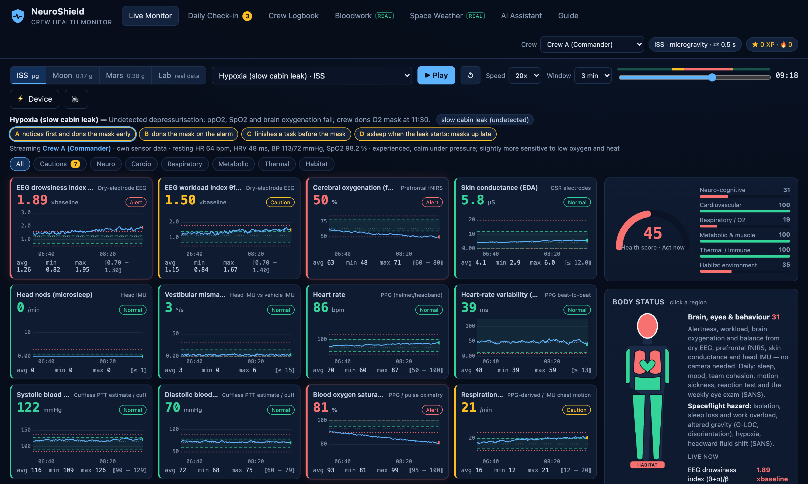
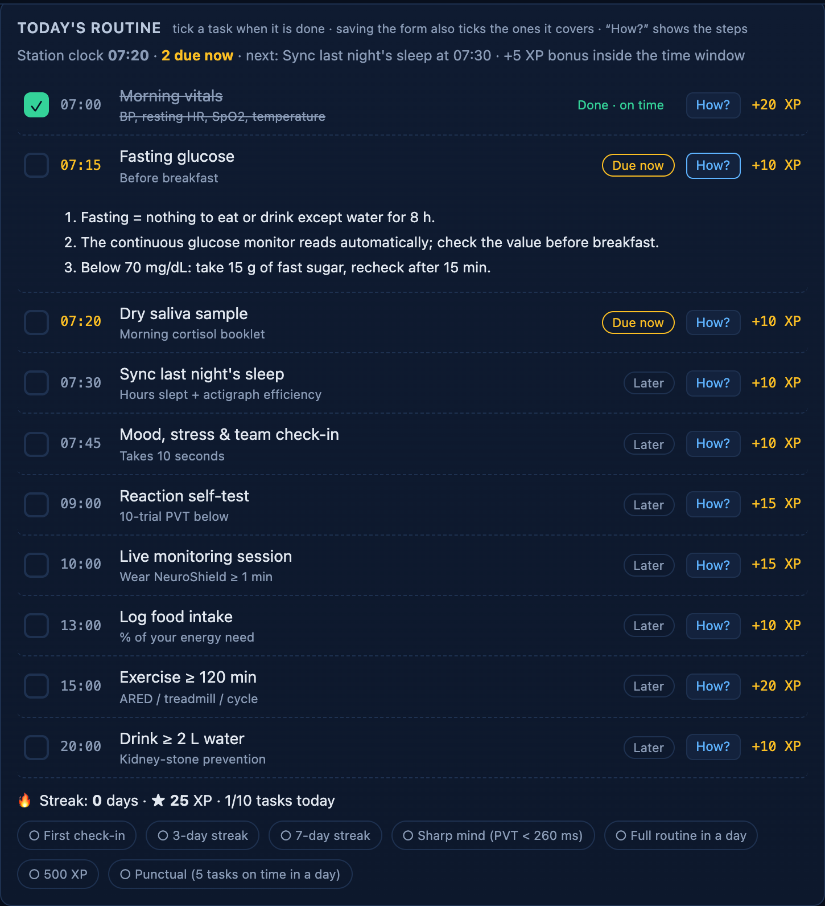
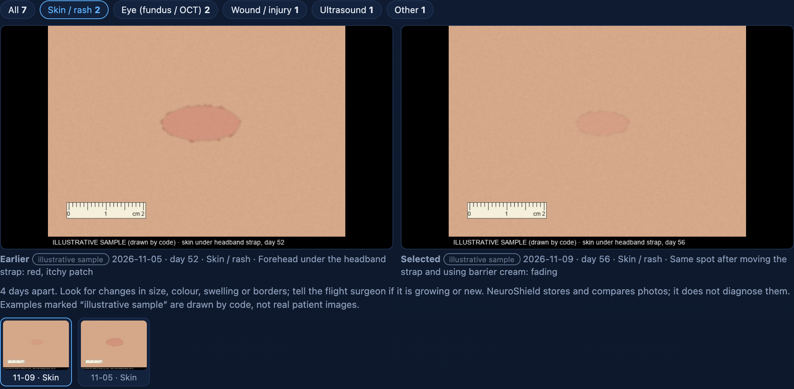
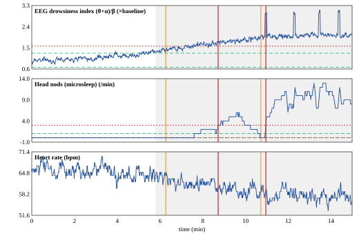
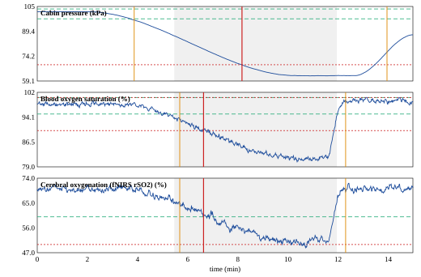
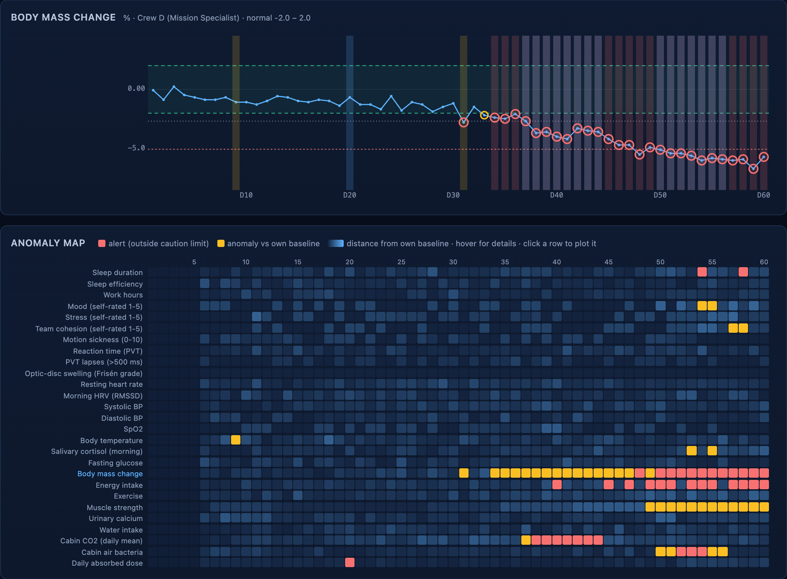

Abstract—With NASA’s Artemis program having flown a crew around the Moon and human missions to Mars in planning, crews will spend longer in a hostile environment and further from help on Earth. NASA’s Human Research Program (HRP) maps this exposure into five hazards: space radiation, isolation and confinement, distance from Earth, gravity fields, and hostile closed environments. The NASA Space Apps 2026 challenge “Create Health Monitoring Software for Astronauts on Space Missions” asks for a visual tool that lets astronauts assess their own health and guides them towards treatment and improvement. We present NeuroShield, an offline web application that answers this call. It fuses camera-free wearable sensing (EEG, fNIRS, PPG/SpO2, electrodermal activity, head IMU), the challenge’s core indicators (blood pressure, heart rate, glucose, temperature, sleep, mood), habitat telemetry and crew photographs. Twenty-one explainable rules, each with cited guidance and delay-aware escalation, run in 12 scenarios for each of three missions (ISS, Moon, Mars; 36 scenarios at the gravity of each environment), and a personal logbook detects anomalies against each astronaut’s own baseline. NASA data are core to the tool: real ISS cabin CO2 and radiation dose from the Open Science Data Repository (OSDR), and Inspiration4 blood tests scored against each astronaut’s preflight baseline. On a synthetic benchmark of 32 400 labelled seconds the live rules reach 93.3 % sensitivity and 90.1 % specificity, with no alerts in nominal scenarios, and the logbook detector finds all 18 injected events. On six open human datasets we test and calibrate the limits on real recordings, and we report where the rules are weak.
Index Terms—space medicine, astronaut health, self-assessment, wearable sensors, EEG, fNIRS, explainable alerts, anomaly detection, gamification, NASA open data.
Space missions are becoming more ambitious. NASA’s Artemis program has accomplished a crewed lunar flyby, and NASA and others plan to send humans to Mars [1]. Longer missions mean more exposure to what the HRP groups into five hazards: space radiation, isolation and confinement, distance from Earth, gravity fields, and hostile closed environments [2], [3]. These hazards contribute to immune changes, bone density loss, cardiovascular events, inadequate nutrition, spaceflight-associated neuro-ocular syndrome (SANS) [4], sleep deficiency and behavioural-health conditions [5]–[7].
On the International Space Station (ISS), flight surgeons follow crew health almost in real time. On a Mars mission, one-way light time of up to about 22 min and communication blackouts mean the crew must assess its own health and act first [5], [8]. In the words of the challenge, astronauts “must be capable of making health assessments on themselves during a mission, to prevent and treat health problems that may arise” [1]. NASA’s artificial-intelligence workshops likewise call for autonomous, explainable “precision space health” [9].
Existing operator-monitoring products do not transfer to spacecraft. Camera-based driver monitoring, now mandatory in new European cars [10], needs a clear view of the face. Helmets, visors and masks block that view, and cameras only see late signs such as eyelid closure. Periodic examinations give snapshots but miss fast events such as cabin depressurisation or G-induced loss of consciousness (G-LOC).
NeuroShield began as our team’s wearable, camera-free operator-safety platform for ground transport and aviation. Here we adapt it to astronauts and to the challenge. Our contributions are:
The challenge defines its objective as “a visual tool that helps astronauts assess their own health during space missions and provides guidance on treatments and health improvements” [1]. It allows any input—“keyboard text, mouse clicks, or camera images”—as long as it represents a health indicator, “such as blood sugar levels in mg/dL or ultrasound images”. It names useful indicators (blood pressure, heart rate, blood sugar, body temperature, daily sleep hours and mood) and suggests that the tool should not “assume that astronauts know everything about how to assess their health”, should prompt measurements as part of the mission routine, and may use gamification, dynamic charts, color coding and a clickable human figure. It closes with five guiding questions, which define the scope of this work. Table I shows how NeuroShield answers each of them.
The scope is the crew-side decision support: what to measure, how to read it, when to act and when to involve the flight surgeon. NeuroShield is not a medical device and does not diagnose. Clinical validation, regulatory approval and integration with flight hardware are outside the scope of this prototype.
| Challenge question [1] | NeuroShield answer |
|---|---|
| Which measurements can be performed in space? | 26 live and 31 daily indicators, each with its sensor or device (wearable headband, cuffless BP, CGM, sleep band, dosimeter, habitat telemetry, OCT, ultrasound, self-report) |
| Why is an exam needed? | Each indicator states why it matters in space and which HRP risk it covers; a risk-coverage table links all hazards |
| How do hazards affect the indicators? | 36 scenarios reproduce each hazard at the gravity of ISS, Moon and Mars; a hazard → indicator map in the guide |
| When does a result warrant attention from the crew or flight surgeons? | Green/amber/red bands with cited limits; alerts with persistence and hysteresis; escalation that depends on the signal delay |
| What actions can prevent a critical condition? | Numbered, cited actions in every alert; a timed daily routine with “How?” steps; personal advice in the assistant |
Cardiovascular. Microgravity shifts fluid towards the head and deconditions the cardiovascular system; six-month missions increase arterial stiffness and induce in-flight insulin resistance [11], and ISS heart-rate studies show altered autonomic regulation [12]. On return to gravity, orthostatic intolerance is common; a fall of ≥ 20 mmHg systolic on standing defines orthostatic hypotension [13]. We use the 2017 ACC/AHA blood-pressure categories [14] and the RMSSD norms of Shaffer and Ginsberg [15].
Thermal and immune. Core temperature rises by about 1 °C during long missions [16], and immune dysregulation with viral reactivation is common [17]; Artemis II collects dry saliva to track it [18].
Metabolic, nutrition and bone. Low energy intake accelerates bone and muscle loss, and bone demineralisation raises renal-stone risk, mitigated by hydration and resistive exercise [19], [20]. We adopt the CGM consensus thresholds of 70 and 54 mg/dL [21] and the ADA “15-15” rule [22].
Sleep, cognition, behaviour and vision. Astronauts sleep about 6 h per night despite 8.5 h scheduled [23]. The psychomotor vigilance test (PVT) is the most sensitive test of sleep loss [24] and is part of the NASA Cognition battery [25]. Isolation affects mood and teamwork [26], [27]. SANS is graded from fundus or OCT images with the Frisén scale [4], [28].
Habitat environment. On the ISS, headache odds roughly double per 1 mmHg of CO2 [29]; CO2 and CO limits are set by the spacecraft maximum allowable concentrations [30] and NASA-STD-3001 [31]. Radiation dose rates rise sharply in solar particle events [32]–[34]. SpO2 below 90 % indicates hypoxaemia [35], for which aviation training prescribes immediate oxygen [36]; decompression sickness limits extravehicular activity (EVA) [37].
The EEG ratio (θ+α)/β rises with drowsiness [38], [39]; frontal theta and parietal alpha track workload [40]. Functional near-infrared spectroscopy (fNIRS) measures prefrontal oxygenation in operators [41], [42] and has been flown with helicopter pilots [43]; regional cerebral saturation (rSO2) indexes brain oxygenation [44]. Under sustained +Gz cerebral perfusion falls and G-LOC follows a known time–intensity curve [45]. Electrodermal activity (EDA) reflects sympathetic arousal [46], and head–vehicle motion mismatch underlies disorientation and motion sickness [47], [48].
Space-health AI roadmaps stress autonomy, explainability and personalisation [9]. For small, noisy per-person samples the median absolute deviation (MAD) is more robust than the standard deviation [49], and a modified z-score of 3.5 is a common outlier rule [50], [51]. Table II compares NeuroShield with existing approaches.
| Approach | Works under helmet/ mask | Lead time | Coverage | Guidance |
|---|---|---|---|---|
| Cabin camera DMS [10] | No | After eyelid closure | Drowsiness, distraction | Alarm only |
| Single EEG headband [38], [39] | Yes | Seconds–min | Fatigue | Alarm only |
| Periodic exams / tests [25] | Yes | None (snapshot) | Broad, discrete | Via ground |
| NeuroShield (ours) | Yes | Minutes before signs | Physiology, habitat, images; 21 conditions | On board, cited, delay-aware |
Fig. 1 shows the architecture. All logic runs in the browser as plain JavaScript, with no build step and no network access, so the tool also works on an air-gapped spacecraft laptop. A single JSON file defines every indicator: unit, normal band, caution band, chart axis, sensor, explanation and literature basis with links. The application, the dataset generator and the evaluation scripts all read this file.
The crew member selects the mission (ISS, Moon at 0.17 g, Mars at 0.38 g) and one of 12 scenarios. Each scenario is set in a concrete environment: the station and its EVAs, a lunar base, lander, pressurised rover and moonwalk, a Mars base, rover and EVA, Earth entry after a long stay, Orion’s lunar return, and Mars entry, descent and landing. Gravity, radiation shielding and the one-way signal delay (0.5 s at the ISS, about 1.3 s at the Moon and 12 min in our Mars scenario) change with the environment. Four crew members have their own baselines and play different roles in each scenario: in a slow cabin leak, one notices early and dons the mask, another is asleep and masks up late. Hovering over the mission label explains the gravity and the delay.
The live stream carries 26 channels at 1 Hz. Raw EEG and fNIRS are processed on the wearable; the tool receives derived, baseline-normalised indices: the drowsiness index (θ+α)/β [39], a workload index [40] and prefrontal rSO2 [44]. This keeps bandwidth low and protects the neural signal. A WebSocket input accepts frames from the NeuroShield hardware; a replay mode streams the datasets. The daily logbook holds 31 indicators; sensors and devices fill most of them automatically, and the crew member reports only mood, stress, team cohesion, motion sickness, food, water and symptoms, and may attach photographs (skin, eye fundus/OCT, wound, ultrasound). Table III lists selected limits.
| Indicator | Normal | Caution | Basis |
|---|---|---|---|
| Heart rate (bpm) | 50–100 | 40–120 | [15] |
| HRV, RMSSD (ms) | ≥13 | ≥10 | [15], [52] |
| Systolic / diastolic BP (mmHg) | 90–129 / 60–79 | ≤139 / ≤89 | [14] |
| SpO2 (%) | ≥95 | ≥90 | [35] |
| Body temperature (°C) | 36.1–37.5 | 35.5–38.0 | [16] |
| Glucose, CGM (mg/dL) | 70–140 | 54–180 | [21] |
| EEG (θ+α)/β (×baseline) | 0.7–1.3 | 0.5–1.6 | [38], [39], [53] |
| fNIRS rSO2 (%) | 60–80 | 50–85 | [44] |
| Cabin CO2 (ppm) | ≤3950 | ≤5300 | [29], [30] |
| Sleep (h/day) | 7–9.5 | 6–11 | [23], [54] |
| PVT reaction time (ms) | 180–300 | 150–360 | [24] |
For indicator i with value x, the sub-score si is 100 inside the normal band [nl, nh]; in the caution band it falls linearly to 60 at the caution limit, and beyond that limit to 0 over one more band width w. Above the band, for example,
si = 100 − 40 (x − nh)/w, nh < x ≤ ch(1)
Each indicator belongs to one of six body systems (neuro-cognitive, cardiovascular, respiratory/O2, metabolic, thermal/immune, habitat). The system score blends the mean and the worst indicator,
Sk = 0.4 · meani∈k si + 0.6 · mini∈k si(2)
so that one dangerous value is never averaged away. The overall score is a weighted mean of the systems; an active alert caps its system at 70 (caution) or 35 (critical) and the overall score at 75 or 45. Cards, the score gauge, the per-system bars and a clickable human figure are colored green, amber or red; clicking a body region explains its function, its indicators and the related hazard. A “Cautions” filter shows only the indicators that have left the green band.
Twenty-one rules cover hypoxia, cabin depressurisation, G-LOC precursors, drowsiness/microsleep, cognitive overload, acute stress, spatial disorientation, high CO2, toxic CO, hypoglycaemia, fever, decompression sickness, suit pressure, cabin heat, cold cabin, noise, solar particle events, hypertension, orthostatic hypotension, tachycardia and bradycardia. Each rule is a readable predicate over window statistics (mean, minimum, maximum, slope and change from the personal baseline). Three mechanisms keep alerts trustworthy: persistence (a rule fires only after its condition has held for 3–30 s), hysteresis (escalation is immediate, but downgrading and clearing take longer), and root-cause suppression (generic signs such as drowsiness or tachycardia are suppressed while a specific cause such as hypoxia or G-LOC is active, EEG fatigue rules are gated off under high +Gz, and the stress rule is gated off during physical effort).
Every alert shows why it fired, numbered actions and their source, for example oxygen and a buddy check for hypoxia [36], the anti-G straining manoeuvre [45], a strategic nap and blue-enriched light for drowsiness [55], [56], paced breathing for overload [57], the 15-15 rule for hypoglycaemia [22] and the storm shelter in a solar particle event [31]. Escalation depends on distance: at the ISS the flight surgeon leads; when the round trip exceeds a minute, the Crew Medical Officer leads and NeuroShield sends the alert package to Earth.
For indicator m on day t, a robust z-score compares the value with the history Ht, up to 14 previous unflagged days within 21 days:
zt = (xt − med Ht) / max(1.4826 · MAD Ht, σm)(3)
Here σm is a per-indicator noise floor [49], [50]; excluding flagged days keeps an ongoing episode from becoming the new normal. A down-weighted score against the in-flight baseline (days 4–14) catches slow drifts such as body-mass loss, and coarse self-reports are flagged when they stay outside their band on at least 3 of 5 days. Anomalous days are merged into episodes and classified by pattern (e.g. temperature↑ with resting HR↑ → possible infection) with guidance. An anomaly map shows every indicator over 60 days: red for values outside the caution limit, amber for anomalies against the person’s own baseline, and shades of blue for the distance from it.
The routine has ten tasks on the station clock (morning vitals 07:00, fasting glucose, dry saliva sample, sleep sync, mood check-in, reaction test, monitoring session, food log, exercise and water). Each task shows whether it is due, overdue or done; a reminder appears on every tab with “How to”, “Done” and “Snooze” buttons; and a “How?” button opens three or four plain-language steps, e.g. how to take blood pressure or what “fasting” means (Fig. 3). Completing tasks earns experience points (XP), with a bonus inside the time window, streaks and badges. A 10-trial PVT measures reaction time and lapses [24]. Photographs added with the daily log are stored on the device and shown in the logbook next to the earlier photo of the same kind with the number of days between them (Fig. 4); NeuroShield compares, it does not diagnose.
The habitat baselines come from real ISS telemetry: the OSDR Environmental Data Application provides five-minute cabin CO2, temperature and humidity and daily dose for seven rodent-research missions [58]; their medians (CO2 ≈ 3270 ppm, 22.2 °C, 41 % RH, 0.28 mGy/day) set the simulator, and the 60-day logbook carries 60 real days of mission RR-7, including a real CO2 excursion. A Bloodwork tab shows the Inspiration4 complete blood count and metabolic panel (OSD-569/575) [59], [60], scoring the day-after-landing sample against each astronaut’s preflight mean. A Space Weather tab fetches the GOES proton flux from NOAA and explains the solar-radiation-storm scale for EVA planning [61]. An assistant tab drafts answers from the crew member’s own logbook, episodes and live data and ends with “I am not a doctor, but…” advice; it is designed to be replaced by an on-board small medical language model such as MedGemma 4B [62], which runs on ordinary hardware without a link to Earth.



No public dataset combines astronaut EEG/fNIRS, vital signs and habitat telemetry with condition labels, so we built a deterministic generator. Each signal is a personal baseline plus autoregressive noise plus literature-informed responses with physiological lags (e.g. SpO2 follows cabin ppO2 with an 8-s lag; rSO2 falls with (Gz − 1)1.3 [45]). The 12 scenarios (Table IV) are generated for ISS, Moon and Mars with gravity-specific adjustments, 900 s at 1 Hz each, and for each of the four crew members with their own baselines, roles and timing; every second carries a ground-truth label. The logbook has 4 crew × 60 days with early-flight adaptation and injected events (sleep deprivation, a solar particle event, the real RR-7 CO2 excursion, cabin microbial growth, infection, blood-pressure rise with optic-disc swelling, and body-mass loss with low mood).
| Scenario | Driving change |
|---|---|
| Nominal day | routine work |
| Fatigue → microsleep | EEG slowing, head nods |
| Cognitive overload | docking, manual landing, medical emergency |
| Hypoxia | slow cabin/habitat leak, mask at 11:30 |
| High-G / G-LOC precursor | Earth entry, lunar return, Mars EDL |
| Spatial disorientation | head–vehicle mismatch (rover) |
| CO2 build-up | scrubber failure |
| Hypoglycaemia | exercise after a skipped meal |
| Fever | viral reactivation (time-compressed) |
| Solar particle event | dose increase, storm shelter |
| EVA decompression risk | suit pressure, N2 tissue ratio |
| Thermal failure | cabin heat or cold cabin |
We reviewed open datasets and used those that can be downloaded without an access request (Table V). Three are replayed in a “Lab” mission of the live monitor, where each crew member replays a different real person and only the recorded channels are shown; the others calibrate limits.
| Dataset | Content | Use |
|---|---|---|
| Non-EEG [63], [64] | 20 people; HR, SpO2, EDA; rest, exercise, emotional and cognitive stress | Stress rule, Lab replay |
| PRCP [65] | 10 people; beat-to-beat BP, ECG; tilt and standing | Orthostatic rule, Lab replay |
| BIDMC [66] | 53 ICU patients; HR, RR, SpO2 at 1 Hz | Clinical reference, Lab replay |
| Cybersickness [67] | 159 VR sessions, 54 people; EDA, HR, scene rotation, SSQ | Disorientation rule, Lab replay |
| NSR RR [52] | 54 healthy 24-h ECGs | RMSSD band |
| EEG drowsiness [53], [68] | 11 people, 2022 alert/drowsy epochs | Drowsiness index |
| Sleep-EDF [54] | 153 scored nights | Sleep limits |
| Tufts fNIRS2MW [42] | forehead fNIRS, 0–3-back (1 of 68 subjects) | Workload trend |
| OSDR EDA, OSD-569/575 [58], [59] | ISS cabin CO2, dose; Inspiration4 blood tests | Habitat baselines, Bloodwork |
Protocol. A Node.js script runs the unmodified browser modules over every scenario and logbook. At each second, a positive prediction is any active alert, and a positive label is any state other than nominal, except routine 1.5–4.5 G load during entry. We report per-second sensitivity and specificity, onset latency and the minimum health score. A logbook episode matches a ground-truth event of the same kind (habitat or physiological) if they overlap within ±1 day.
| Scenario | First abn. label (s) | First alert (s) | Δ (s) | Sens. | Spec. | Min score |
|---|---|---|---|---|---|---|
| Nominal | – | none | – | – | 1.00 | 100 |
| Fatigue | 347 | 376 | +29 | 0.95 | 1.00 | 45 |
| Overload | 212 | 216 | +4 | 0.99 | 0.97 | 45 |
| Hypoxia | 328 | 232a | −96 | 1.00 | 0.45 | 45 |
| High-G | 395 | 394 | −1 | 1.00 | 0.97 | 45 |
| Disorient. | 288 | 301 | +13 | 0.96 | 0.96 | 45 |
| CO2 | 288 | 313 | +25 | 0.96 | 1.00 | 45 |
| Hypoglyc. | 417 | 204b | −213 | 0.96 | 0.59 | 45 |
| Fever | 378 | 546 | +168 | 0.68 | 1.00 | 75 |
| SPE | 237 | 250 | +13 | 0.98 | 0.93 | 75 |
| EVA DCS | 140 | 149 | +9 | 0.97 | 1.00 | 45 |
| Thermal | 157 | 225 | +68 | 0.89 | 0.91 | 45 |
| ISS (10 800 s) | 0.931 | 0.897 | ||||
| Moon (10 800 s) | 0.931 | 0.902 | ||||
| Mars (10 800 s) | 0.936 | 0.903 | ||||
| All 36 scenarios | 0.933 | 0.901 |
aCabin-pressure alert before SpO2 falls. bA tachycardia caution during exercise; the critical hypoglycaemia alert follows at 586 s, 3 s after the severe-hypoglycaemia label.
Live alerts. Over all 36 scenarios (32 400 s) the per-second sensitivity is 93.3 % and specificity 90.1 % (Table VI); results are almost identical for ISS, Moon and Mars. Replaying each crew member’s own track gives 93.5–95.2 % sensitivity and 92.8–95.1 % specificity, and crew members who are not affected in a scenario raise no alerts. Nominal scenarios produce no alert. In the fatigue scenario (Fig. 5) the drowsiness caution appears at 376 s and the critical alert at 523 s, 279 s and 132 s before the first labelled microsleep (655 s): EEG slowing precedes the head nods a camera would see. In the leak scenario (Fig. 6) the cabin-pressure rule warns 96 s before SpO2 leaves its normal band; these early alerts count as false positives per second, which explains the low specificity there. Fever is the weakest case (68 %), because the rule waits for 38 °C.


Health score. The score averages 96.0 ± 11.4 in nominal seconds and 60.2 ± 17.5 in abnormal ones, and reaches the critical cap (45) in most scenarios.
Logbook. The detector finds all 18 injected events across 240 crew-days with two unmatched single-day episodes (Crew C day 7, Crew D day 9, both early-flight adaptation). Crew D’s progressive body-mass loss is found through drift (Fig. 7) together with the muscle-strength, mood and team-cohesion decline that accompanies it.

Real recordings. On real data the rules behave as follows. Stress (Non-EEG): the stress rule, which needs an HR rise with a clear EDA rise, is active 22.8 % of the cognitive-stress time versus 3.6 % at rest and fires in 9 of 20 people; short emotional clips go unnoticed. Wrist HR and EDA alone are a weak stress signal, which is why NeuroShield adds the EEG workload index. Orthostatic (PRCP): healthy volunteers compensate on tilting (median HR +11 bpm, systolic change 0 mmHg); the rule, based on the consensus definition [13], never fires while supine and fires in 5 of 59 head-up manoeuvres. An earlier absolute limit (systolic < 90 mmHg) flagged two healthy people at rest and was removed. Clinical reference (BIDMC): the monitor alerts in 14 of 53 intensive-care patients, 22.1 % of the time, mostly for low SpO2. Cybersickness: following the dataset’s own analysis, the median Simulator Sickness Questionnaire score [48] is 22.4; the rise in EDA during a session tracks sickness best (ρ = 0.38 with SSQ, 0.51 with nausea; AUC 0.78 for SSQ ≥ 40 vs < 20), HR change does not (ρ = 0.00), and more scene rotation makes the same person sicker (ρ = 0.51 within person). The disorientation rule, built for sharp head–vehicle mismatch above 15 °/s, fires in only 5 of 33 sick sessions: VR sickness builds from moderate, cumulative conflict.
Calibration. In 15 234 five-minute windows of healthy 24-h ECGs, the median RMSSD is 21 ms and the 10th percentile 13 ms; our original normal limit of 20 ms put 46 % of healthy windows in caution, so we lowered it to 13 ms. In the EEG drowsiness set, the (θ+α)/β index of drowsy epochs is 1.61 times the person’s alert level (AUC 0.70 for single 3-s epochs). In Sleep-EDF, adults under 50 sleep a median 7.3 h with 92 % efficiency, consistent with our sleep bands. In the first Tufts fNIRS subject, oxygenated haemoglobin on one forehead channel rises with n-back level (ρ = 0.73, AUC 0.97 for 2–3-back vs 0–1-back blocks).
Early, camera-free warning. Physiological and habitat signals reveal developing hazards minutes before external signs appear, in exactly the situations where cameras fail (visors, masks, darkness) and crews cannot wait for ground support.
Explainability and honesty. We used transparent rules and robust statistics instead of a trained classifier. Every alert names its triggering values, limits and sources, so a crew member or flight surgeon can audit and adjust it [9]. Testing on real recordings made the tool better and showed its limits: two limits were changed on evidence, one rule was redesigned, and the weak cases (stress from wrist sensors, VR sickness) are reported rather than hidden.
Limitations. The main benchmark is synthetic, so it shows that the logic is consistent, not that it is clinically valid. The real recordings come from Earth, not from astronauts, and the fNIRS check uses one subject. Thresholds are population values; EEG and fNIRS indices need individual calibration, and microgravity shifts several baselines [16]. Fever is detected late, and the disorientation rule misses slowly building sickness. The tool supports decisions and is not a medical device.
Future work. We plan to (i) connect the NeuroShield wearable through the existing WebSocket interface and test with volunteers on a motion simulator; (ii) add a cumulative motion-sickness score and a temperature-trend infection rule; (iii) learn personal thresholds and compare the rules with learned models; (iv) connect an on-board small language model; and (v) test usability with analog-mission crews.
NeuroShield turns the hazards catalogued by NASA’s HRP into a practical self-assessment tool, as the NASA Space Apps 2026 challenge asks. It shows live multimodal signals against cited limits, condenses them into an explainable health score and a clickable body figure, detects 21 conditions with guidance and delay-aware escalation, finds day-to-day anomalies against each astronaut’s own baseline, and builds on real NASA data. We have prepared a working demo that delivers each feature the challenge suggests (Table VII), together with the application, the dataset generators and the evaluation scripts, so that others can reproduce, extend and validate the approach with real crew data.
| Challenge feature [1] | Demo |
|---|---|
| Different environments: spacecraft, station, rover, planetary or lunar base | ISS, Moon and Mars missions. Environments: ISS, ISS EVA, lunar base, lunar lander, lunar rover, lunar EVA, Mars base, Mars rover, Mars EVA, return to Earth (Earth entry, lunar return) and Mars entry, descent and landing; 12 scenarios, each adjusted to the gravity of its environment |
| Prompts for measurements and actions as part of the mission routine | A timed daily routine with due/overdue status, reminders on every tab (“How to”, “Done”, “Snooze”) and a count on the Daily Check-in tab |
| Gamification | Experience points per task with an on-time bonus, streaks, badges and an XP counter in the header |
| Dynamic charts of indicators over time | Second-by-second charts in the live monitor; 60-day chart and anomaly map in the crew logbook; pre- and post-flight sparklines in Bloodwork |
| Color coding for status at a glance | Green, amber and red cards, health score, body figure and anomaly map; a “Cautions” filter |
| Simple instructions and explanations of measurements, indicators and risks | A guide with every indicator’s range, how it is measured, why it matters in space and its linked source; an HRP risk table; explanations on hover; numbered actions in every alert; “How?” steps for each task; an AI assistant |
This work was prepared for the NASA Space Apps Challenge 2026 by Team Paragon. It builds on the NeuroShield wearable operator-safety concept developed by Paragon Uzay ve Havacılık A.Ş. We thank the providers of the open datasets used here. An AI assistant (Anthropic Claude) was used to help write the software and edit the text; the authors reviewed and take responsibility for the content.